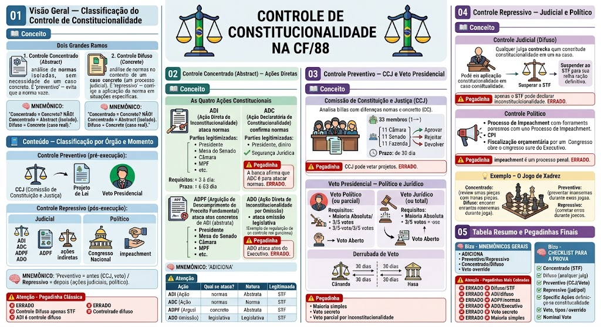

O que é Controle de Constitucionalidade?
O que é Controle de Constitucionalidade?
É o mecanismo pelo qual a ordem constitucional é preservada, garantindo que nenhuma norma jurídica (lei, decreto, etc.) viole a Constituição Federal.
Dois grandes ramos:
1. Controle Concentrado (Abstract): análise de normas isoladas, sem necessidade de um caso concreto. É 'preventivo' — evita que a norma vaze.
2. Controle Difuso (Concrete): análise de normas no contexto de um caso concreto (um processo judicial). É 'repressivo' — corrige a aplicação da norma em situações específicas.
🧠 MNEMÔNICO: 'Concentrado = Concreto? NÃO! Concentrado = Abstract (isolado). Difuso = Concrete (caso real).'
Classificação por Órgão e Momento
Classificação por Órgão e Momento
Controle Preventivo (pré-execução):
- CCJ (Comissão de Constituição e Justiça): analisa projetos de lei em fase de tramitação legislativa, verificando se não violam a Constituição.
- Veto presidencial: o Presidente pode vetar um projeto de lei por considerá-lo inconstitucional.
Controle Repressivo (pós-execução):
- Judicial: ações diretas (ADI, ADC, ADPF, ADO) e ações indiretas (habeas corpus, mandado de segurança, etc.).
- Político: o Congresso Nacional pode declarar a inconstitucionalidade de atos do Poder Executivo por meio de processos de impeachment ou outros mecanismos.
🧠 MNEMÔNICO: 'Preventivo = antes (CCJ, veto) / Repressivo = depois (ações judiciais, político).'
⚠️ Pegadinha Clássica
⚠️ Pegadinha Clássica
A banca afirma que o Controle Difuso é feito apenas pelo STF. ERRADO. O Controle Difuso é exercido por todos os órgãos jurisdicionados (STF, STJ, Tribunais Regionais Federais, Tribunais de Justiça, etc.) quando aplicam a Constituição em casos concretos.
Outra pegadinha: 'ADI é controle difuso.' → ERRADO. ADI é controle concentrado (abstract), pois não depende de um caso concreto.
As Quatro Ações Constitucionais
As Quatro Ações Constitucionais
O Controle Concentrado é exercido por meio de ações diretas perante o STF:
- ADI (Ação Direta de Inconstitucionalidade): ataca leis ou atos normativos que contrariam a Constituição.
- ADC (Ação Declaratória de Constitucionalidade): pede ao STF que declare a constitucionalidade de uma norma (quando há dúvida sobre sua validade).
- ADPF (Arguição de Descumprimento de Preceito Fundamental): ataca atos concretos que descumprem um preceito fundamental (situação fática concreta, não norma abstrata).
- ADO (Ação Direta de Inconstitucionalidade por Omissão): ataca a omissão do Poder Legislativo em legislar sobre matéria que a Constituição determina que seja regulada por lei.
🧠 MNEMÔNICO: 'ADICIONA' — ADI, DADC, IADPF, CADO, IOmissão, Omissão, Normas, Atos, STF.
ADI — Ação Direta de Inconstitucionalidade
ADI — Ação Direta de Inconstitucionalidade
Objetivo: declarar a inconstitucionalidade de lei ou ato normativo.
Legitimidade ativa (quem pode propor):
- Presidente da República (Art. 102, I, a);
- Mesa do Senado Federal (Art. 102, I, b);
- Mesa da Câmara dos Deputados (Art. 102, I, c);
- Ministério Público Federal (Art. 102, I, d);
- Partido político com representação no Congresso Nacional (Art. 102, I, e);
- União, Estados, DF e Municípios (Art. 102, I, f);
- Cidadãos (1/3 dos deputados + 1/3 dos senadores) (Art. 102, I, g — ação coletiva de 1/3 + 1/3).
Requisitos:
- Reclamação de constitucionalidade (necessidade de demonstrar a violação à CF);
- Interesse de oferecer a ação (legitimidade ativa);
- Matéria juridicamente relevante (não pode ser mera repetição de julgado).
Prazo: não há prazo legal, mas a ação deve ser apreciada com celeridade (Art. 102, §1º).
ADC — Ação Declaratória de Constitucionalidade
ADC — Ação Declaratória de Constitucionalidade
Objetivo: pedir ao STF que declare a constitucionalidade de uma norma jurídica quando haja dúvida sobre sua validade.
Legitimidade ativa (quem pode propor):
- Presidente da República (Art. 102, II, a);
- Mesa do Senado Federal (Art. 102, II, b);
- Mesa da Câmara dos Deputados (Art. 102, II, c);
- Ministério Público Federal (Art. 102, II, d);
- Partido político com representação no Congresso Nacional (Art. 102, II, e);
- União, Estados, DF e Municípios (Art. 102, II, f);
- Cidadãos (1/3 dos deputados + 1/3 dos senadores) (Art. 102, II, g).
Diferença da ADI: enquanto a ADI ataca a norma, a ADC confirma a norma. É um mecanismo de segurança jurídica.
⚠️ Pegadinha: A banca afirma que ADC é para atacar normas. ERRADO. ADC é para declarar a constitucionalidade (confirmação), não inconstitucionalidade.
ADPF — Arguição de Descumprimento de Preceito Fundamental
ADPF — Arguição de Descumprimento de Preceito Fundamental
Objetivo: pedir ao STF que pare um ato concreto que descumpre um preceito fundamental da Constituição.
Diferenças-chave:
- ADPF: ataca ato concreto (situação fática real, não norma abstrata). Ex: um decreto que proíbe manifestação política.
- ADI: ataca norma abstrata (lei, decreto normativo). Ex: uma lei que proíbe manifestação política.
Legitimidade ativa (quem pode propor):
- Presidente da República (Art. 102, III, a);
- Mesa do Senado Federal (Art. 102, III, b);
- Mesa da Câmara dos Deputados (Art. 102, III, c);
- Ministério Público Federal (Art. 102, III, d);
- Partido político com representação no Congresso Nacional (Art. 102, III, e);
- União, Estados, DF e Municípios (Art. 102, III, f);
- Cidadãos (1/3 dos deputados + 1/3 dos senadores) (Art. 102, III, g).
⚠️ Pegadinha: A banca afirma que ADPF é para atacar normas abstratas. ERRADO. ADPF é para atos concretos que descumprem preceitos fundamentais.
ADO — Ação Direta de Inconstitucionalidade por Omissão
ADO — Ação Direta de Inconstitucionalidade por Omissão
Objetivo: declarar a inconstitucionalidade da omissão do Poder Legislativo em legislar sobre matéria que a Constituição determina que seja regulada por lei.
Exemplo clássico: A Constituição determina que a lei regulamente a posse de arma de fogo (Art. 22, XVII, da CF). Se o Congresso Nacional não aprovar nenhuma lei sobre o tema, alguém pode propor uma ADO pedindo ao STF para declarar que a omissão é inconstitucional.
Legitimidade ativa: as mesmas da ADI (Art. 102, I).
⚠️ Pegadinha: A banca afirma que ADO é para atacar atos do Executivo. ERRADO. ADO é para atacar a omissão do Legislativo em legislar sobre matéria constitucionalmente regulada.
⚠️ Diferências entre as Ações
⚠️ Diferências entre as Ações
Tabela comparativa:
| Ação | Ataca | Natureza | Legitimidade |
|---|---|---|---|
| ADI | Norma abstrata | Inconstitucionalidade | Art. 102, I |
| ADC | Norma abstrata | Constitucionalidade | Art. 102, II |
| ADPF | Ato concreto | Descumprimento de preceito fundamental | Art. 102, III |
| ADO | Omissão do Legislativo | Inconstitucionalidade por omissão | Art. 102, I |
🧠 MNEMÔNICO: 'ADI ataca, ADC afirma, ADPF para atos concretos, ADO para omissão.'
Comissão de Constituição e Justiça (CCJ)
Comissão de Constituição e Justiça (CCJ)
A CCJ é uma comissão temporária do Congresso Nacional, composta por 33 membros (11 da Câmara, 11 do Senado, 11 da Fazenda Ribeira — não, na verdade, 11 da Câmara, 11 do Senado e 11 da Fazenda).
Função: analisar projetos de lei em fase de tramitação para verificar se são constitucionalmente compatíveis. A CCJ pode:
- Aprovar o projeto (se for constitucional);
- Rejeitar o projeto (se violar a Constituição);
- Devolver com observações.
Prazo: a CCJ tem 30 dias para se manifestar sobre projetos de lei que lhe sejam submetidos.
⚠️ Pegadinha: A banca afirma que a CCJ pode vetar projetos de lei. ERRADO. A CCJ apenas se manifesta; o veto é do Presidente da República.
Veto Presidencial — Político e Jurídico
Veto Presidencial — Político e Jurídico
O Presidente da República pode vetoar um projeto de lei aprovado pelo Congresso Nacional (Art. 66, §1º).
Dois tipos de veto:
1. Veto político (ou parcial): o Presidente veta apenas alguns artigos ou parágrafos do projeto, mantendo os demais. O Congresso pode derrubar esse veto por maioria absoluta (Art. 66, §4º).
2. Veto jurídico (ou total): o Presidente veta todo o projeto por considerá-lo inconstitucional. O CongressNacional pode derrubar esse veto por 3/5 dos votos de cada Casa (Art. 66, §4º, parágrafo único).
Derrubada de veto:
- Voto aberto (nominal): hoje é obrigatório (Lei 13.105/2015, art. 10, §1º — a derrubada de veto é sempre nominal e por maioria absoluta do Congresso Nacional).
- Prazo: 30 dias para a Câmara e 30 dias para o Senado (Art. 66, §4º).
⚠️ Pegadinha: A banca afirma que a derrubada de veto pode ser por voto secreto. ERRADO. Hoje é sempre nominal (voto aberto) e por maioria absoluta.
⚠️ Pegadinha: Veto e Derrubada
⚠️ Pegadinha: Veto e Derrubada
❌ 'O veto presidencial pode ser derrubado por maioria simples.' → ERRADO. Exige maioria absoluta (ou 3/5 para veto jurídico).
❌ 'A derrubada de veto pode ser por voto secreto.' → ERRADO. É sempre nominal (voto aberto).
❌ 'O Presidente pode vetar parcialmente por inconstitucionalidade.' → ERRADO. Veto parcial é sempre político; voto total por inconstitucionalidade é jurídico.
Controle Judicial (Difuso)
Controle Judicial (Difuso)
O Controle Difuso é exercido por todos os juízes (não apenas o STF) quando aplicam a Constituição em casos concretos.
Como funciona:
- O juiz, ao julgar um caso, verifica se a lei aplicada é constitucional.
- Se houver dúvida, o juiz pode suspender a aplicação da norma e, em alguns casos, elevar a questão ao STF (recurso especial ou agravo de recado).
- O STF, ao receber a questão, pode reconhecer a inconstitucionalidade da norma, que passa a ser nula para todos os efeitos.
Exemplo: Um juiz estadual julga um caso de usucapião e verifica que a lei estadual que regulamenta o prazo de usucapião viola a Constituição. Ele pode suspender a aplicação da lei e elevar a questão ao STF.
⚠️ Pegadinha: A banca afirma que apenas o STF pode declarar inconstitucionalidade. ERRADO. Qualquer juiz pode, no exercício do controle difuso.
Controle Político
Controle Político
O Controle Político é exercido pelo Congresso Nacional sobre os atos do Poder Executivo.
Instrumentos:
- Processo de Impeachment (Art. 86): o Congresso pode processar o Presidente da República, Governadores e outros oficiais por crimes de responsabilidade.
- CPI (Comissão Parlamentar de Inquérito): investiga atos de improbidade ou corrupção.
- Fiscalização orçamentária: o Congresso aprova e fiscaliza o orçamento público.
Diferença do Controle Judicial:
- O Controle Político é político (baseado na vontade parlamentar), não jurídico.
- O Controle Judicial é jurídico (baseado no direito).
⚠️ Pegadinha: A banca afirma que o impeachment é um processo penal. ERRADO. É um processo político (crime de responsabilidade), não penal.
Para Leigos – O Jogo de Xadrez
Para Leigos – O Jogo de Xadrez
Pense no controle de constitucionalidade como um jogo de xadrez:
- Controle Concentrado (ADI, ADC, ADPF, ADO): o STF analisa as 'peças' (normas) isoladamente, como se estivesse revisando o tabuleiro antes do jogo.
- Controle Difuso: os juízes vão descobrindo problemas com as 'peças' enquanto jogam (caso concreto).
- Controle Preventivo (CCJ, veto): o Congresso e o Presidente tentam prevenir problemas antes que a partida comece.
- Controle Repressivo (judicial, político): depois que algo dá errado, o STF ou o Congresso corrige.
🧠 MNEMÔNICOS GERAIS
🧠 MNEMÔNICOS GERAIS
- 'ADICIONA' — ADI (ataca norma), ADC (afirma norma), ADPF (ato concreto), ADO (omissão).
- 'Preventivo = antes / Repressivo = depois' — CCJ e veto são preventivos; ações judiciais e político são repressivos.
- 'Concentrado = Abstract / Difuso = Concrete' — Concentrado analisa normas isoladas; Difuso analisa casos reais.
- Derrubada de veto: maioria absoluta (3/5 para veto jurídico), voto nominal (aberto).
⚠️ Pegadinhas Mais Cobradas
⚠️ Pegadinhas Mais Cobradas
❌ 'Controle difuso é só do STF.' → ERRADO (qualquer juiz pode exercer).
❌ 'ADI é controle difuso.' → ERRADO (é concentrado/abstract).
❌ 'ADPF ataca normas abstratas.' → ERRADO (ataca atos concretos).
❌ 'ADO ataca atos do Executivo.' → ERRADO (ataca omissão do Legislativo).
❌ 'Derrubada de veto é por voto secreto.' → ERRADO (é nominal/aberto).
❌ 'Veto jurídico é derrubado por maioria simples.' → ERRADO (exige 3/5).
✅ CHECKLIST PARA A PROVA
✅ CHECKLIST PARA A PROVA
✅ Controle Concentrado (Abstract): ADI, ADC, ADPF, ADO — perante o STF.
✅ Controle Difuso (Concrete): qualquer juiz, em caso concreto.
✅ Controle Preventivo: CCJ (30 dias) e veto presidencial.
✅ Controle Repressivo: ações judiciais e controle político (impeachment, CPI).
✅ ADI: ataca norma abstrata. ADC: confirma norma. ADPF: ato concreto. ADO: omissão do Legislativo.
✅ Veto político: parcial, derrubada por maioria absoluta. Veto jurídico: total, derrubada por 3/5.
✅ Derrubada de veto: sempre voto nominal (aberto).
Mapa-mental
Material de estudo: Controle de Constitucionalidade
Material complementar · Ver fonte no GitHub
Tabela Resumo e Pegadinhas Finais
Mapa-mental
